Energy transition
Speed up the shift to clean energy, from the grid to the building. Inspired by Speed & Scale.
Building equitable, abundant cities.
Three fun facts about me
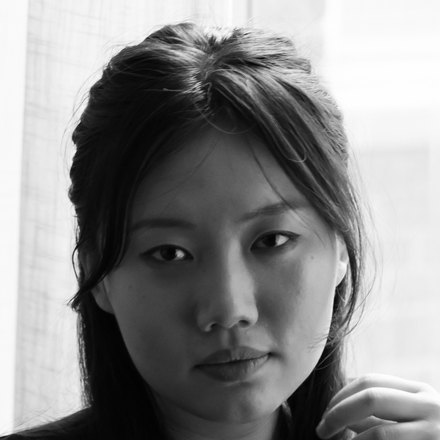
Chinese Kiwi.Columbia alum.Harvard Urban Planning.
What I’m working on
Open to collaboration, chatting about any topic, and sharing reading lists, opportunities and more. I welcome mentorship, and I’m happy to mentor high school and college students. Say hello
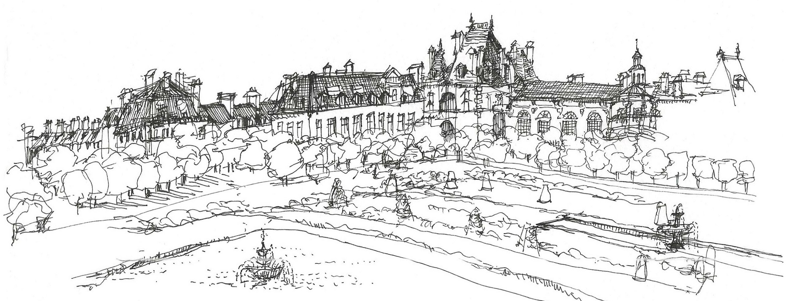
Speed up the shift to clean energy, from the grid to the building. Inspired by Speed & Scale.
Around the world, by 2036, no one should die in traffic.
Good jobs, resilient industries, healthy workplaces, better education and an end to poverty. Think spatially, even when the answer isn’t spatial.
I came to planning from art and architecture, drawing buildings, public realms and people. Living in Hangzhou, Auckland, New York and Cambridge made me curious about urban change. Progress doesn’t happen by itself: we need to nurture the conditions for it. I studied economics and mathematical probability at Columbia to find those conditions. What is the impact of transit-oriented development? How does upzoning work, and who does it benefit? Why is it so hard to build public transit? What problems and inconveniences can intelligent market design solve, and when are market solutions not enough to reach the social optimum?
Now I want to turn research into the real world, using my planning expertise, cross-cultural and cross-disciplinary skills, relationships and beliefs to pull the levers that make change happen. I am particularly passionate about urban and development economics, real estate finance, environmental economics, market design and political economy. There is a lot of innovation and economic gain we can bring to city halls and industries by understanding problems deeply, thinking outside the box and being ambitious about the impact we can have. But with the proliferation of tools, there is often a loss of purpose: what is the technology built and designed for? I am training as an urban planner to better answer this question, in government and in how we plan and invest in infrastructure.
Get in touch or see my resume.
Flood decisions bring together competing definitions of risk and stakeholders who need different evidence. I’m fine-tuning the platform as a decision-support tool: AI should help teams see more, understand trade-offs and move from evidence to action, while people retain control over priorities and decisions.
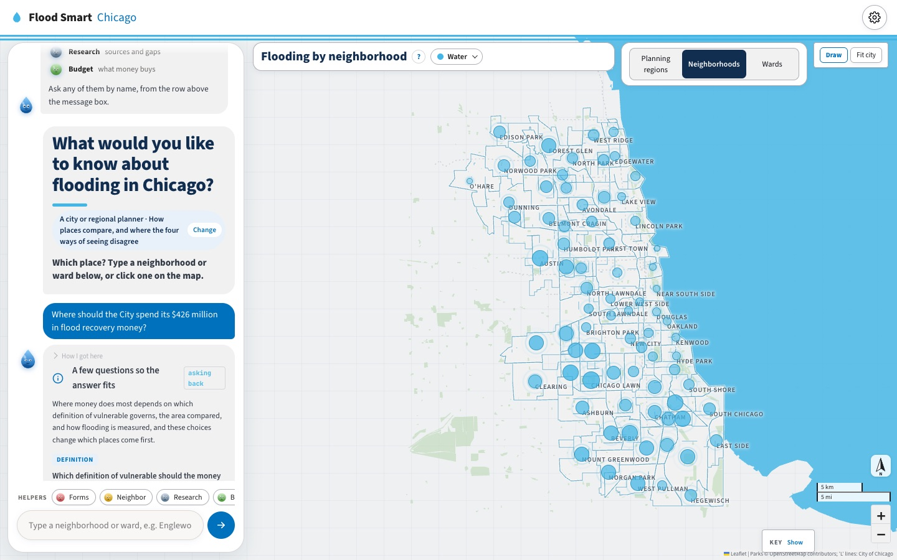
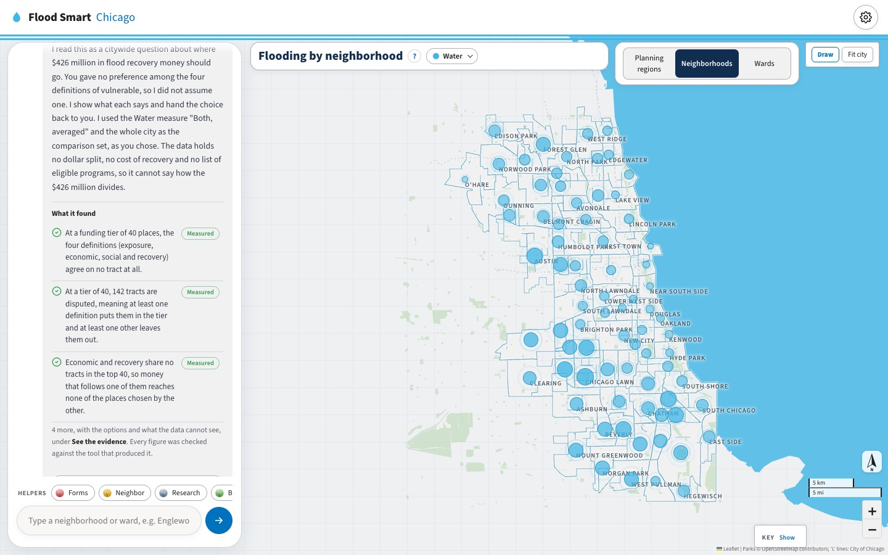
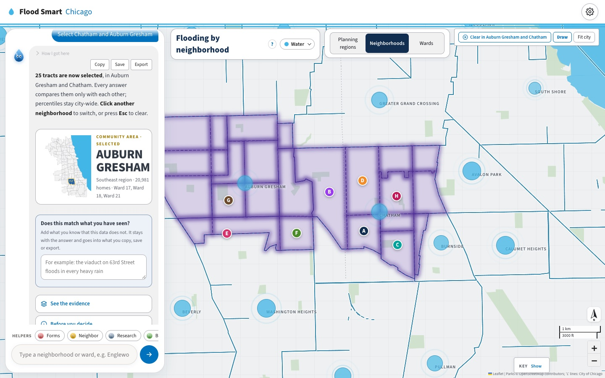
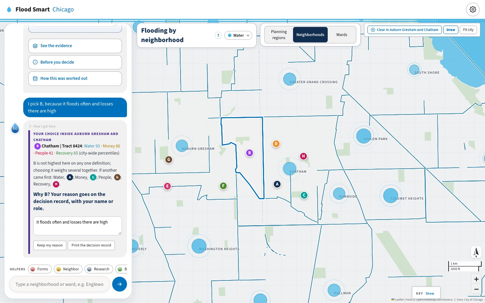
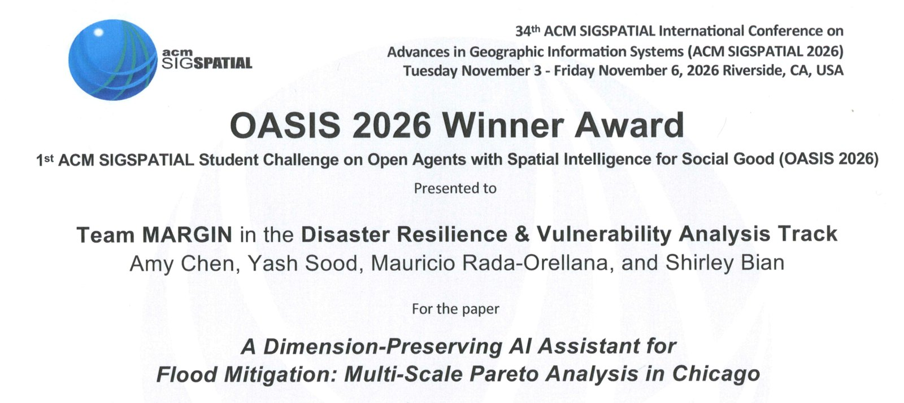
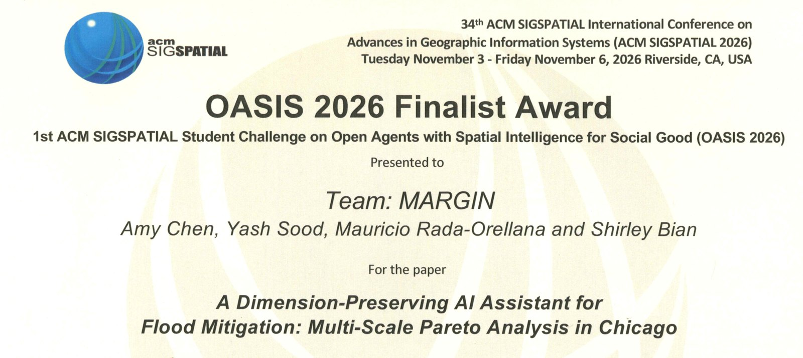
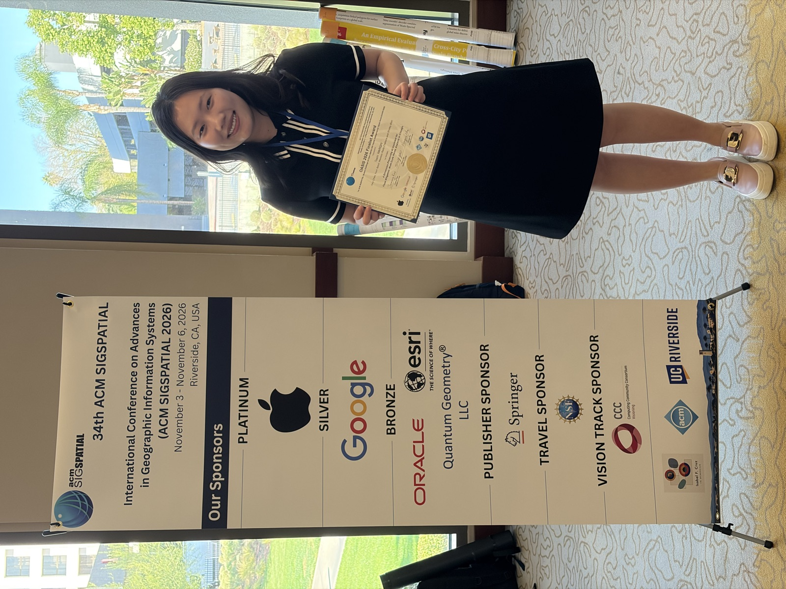
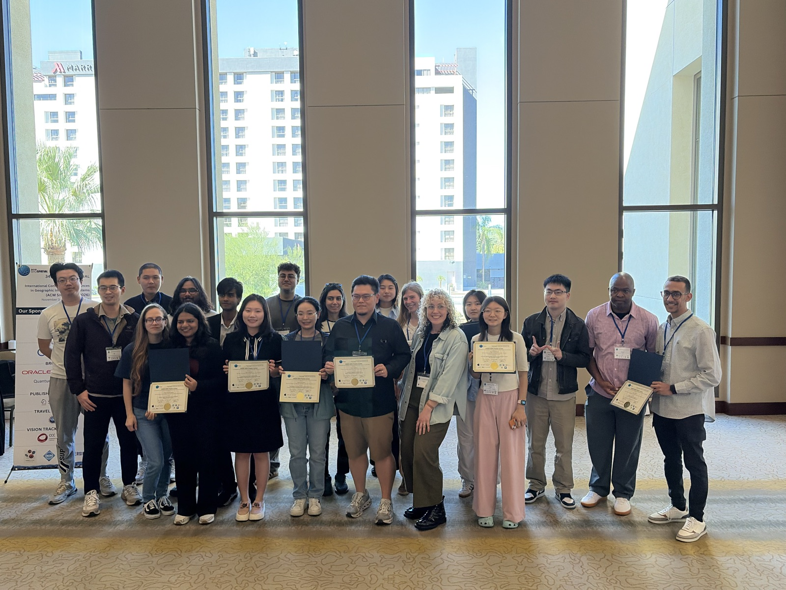
Spatial Analysis · Harvard GSD · Fall 2026 · Individual
Six maps of Allston, each made a different way: on foot, from open crash data, from a 1936 rail map, along the walking network, from the census and from satellite heat. Together they tell one story. Allston's highways and rail yards decide who gets hurt, who walks far for food and where the heat sits.
Drag across the page to compare what I submitted with what I made after feedback.
Representation for Planners · Harvard GSD · Oct. 2026 · Individual
A story in seven drawings that shows my range of representation as an urban planner and designer. Lower Allston gave me a place-specific way to ask a larger question: to what extent should technological progress, including frontier AI, advance before safety and alignment are secured? The drawings study the district as Harvard’s expansion and the I-90 project reshape it, from the energy grid down to the street. They end on Lower Allston as a test case for balancing the speed and scale of frontier research with safety, social impact, collaboration and the public interest.
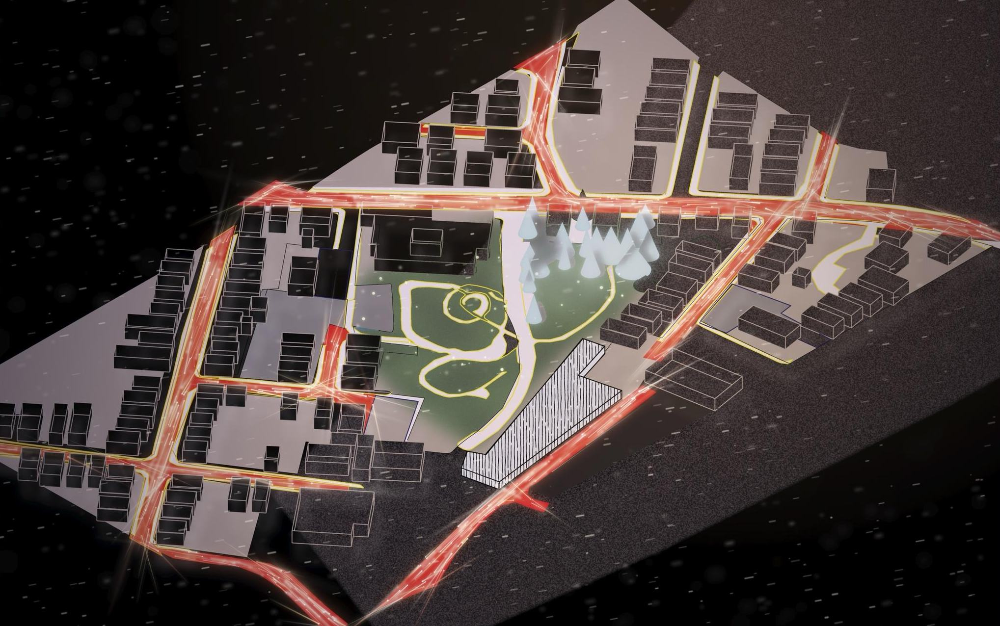
Two pages of client work are blurred; .
I designed these puzzles from my own projects and studies. Planning is messy because everything connects. These fun puzzles are meant to challenge your assumptions about what city building should look like.
Led a four-person team that won our track at OASIS 2026.
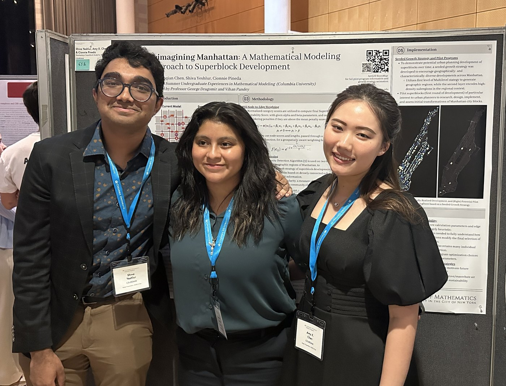
With architects, urban designers, real estate developers, mathematicians, community partners and mayors. Entering ULI Hines with a Harvard–MIT team.
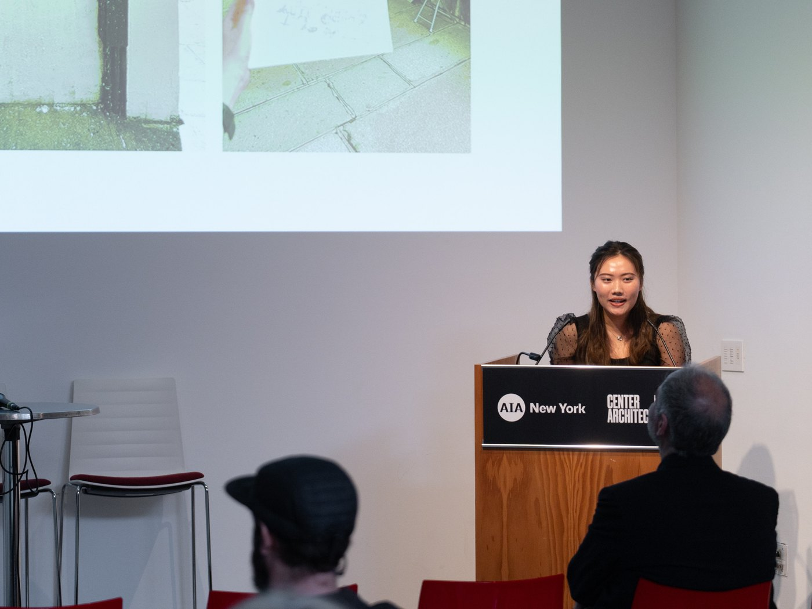
Making Progress, NYU, CUNY + Columbia and AIA New York.
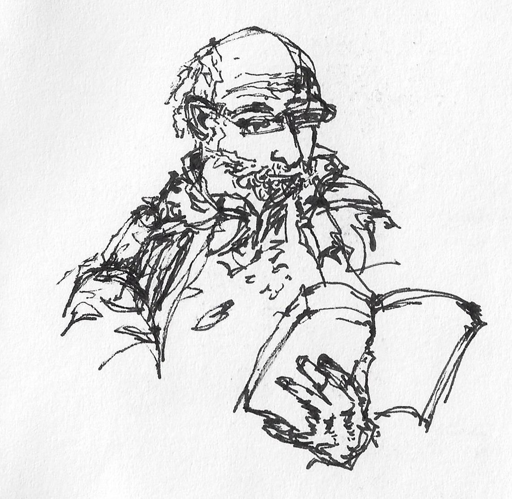
Logic and formal epistemology at Carnegie Mellon.
I believe we should measure success by tangible and tractable improvements in safety, climate resilience, and economic outcomes, rather than by the complexity of methods.
We need to begin inquiries with first-principled and high-leverage questions and critically examine arguments and counterarguments for each inquiry. Rigor is a responsibility.
While planners need to lead with the courage to tell the truth, I am aware that multiple truths can exist and we need to work together to find a solution. Pragmatism and idealism can co-exist.
I want humanity to flourish. And so, we need to ensure that institutions and AI tools remain transparent, safe, and aligned with human values. We need to answer to privacy, agency, and duty to others.
Now
Favorites
Read
Recent films I loved
 The Sound of Music1965 · ★★★★★
Sentimental Value
The Sound of Music1965 · ★★★★★
Sentimental Value Sentimental Value2025 · ★★★★★
Scent of a Woman
Sentimental Value2025 · ★★★★★
Scent of a Woman Scent of a Woman1992 · ★★★★★
Sinners
Scent of a Woman1992 · ★★★★★
Sinners Sinners2025 · ★★★★★
Notting Hill
Sinners2025 · ★★★★★
Notting Hill Notting Hill1999 · ★★★★★
The Godfather Part III
Notting Hill1999 · ★★★★★
The Godfather Part III The Godfather Part III1990 · ★★★★★
The Godfather Part II
The Godfather Part III1990 · ★★★★★
The Godfather Part II The Godfather Part II1974 · ★★★★★
The Godfather
The Godfather Part II1974 · ★★★★★
The Godfather The Godfather1972 · ★★★★★
The Godfather1972 · ★★★★★
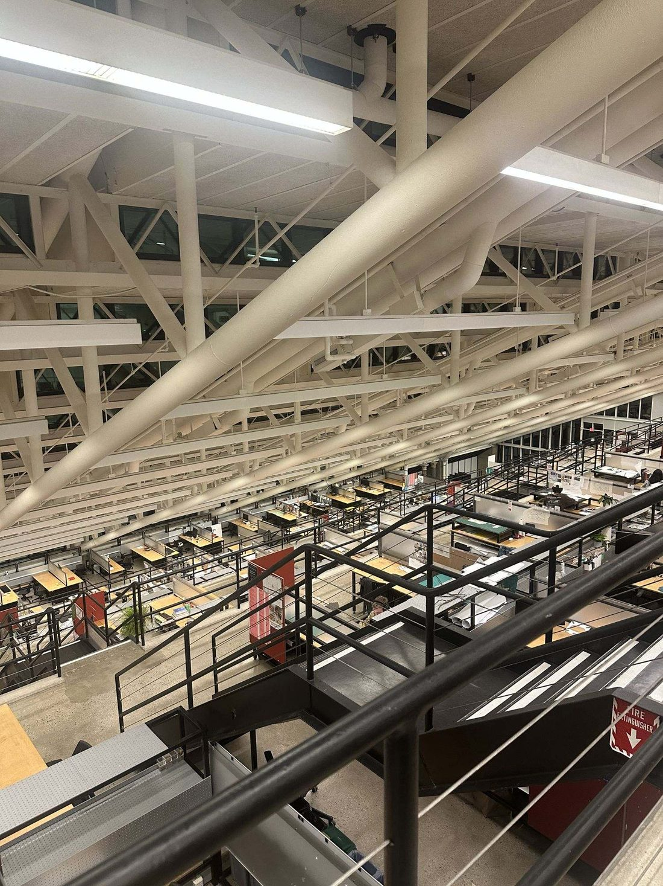
Light, adaptable ways to build for places in constant change. See the Kumbh Mela’s temporary city from the air, photographed by Dinesh Mehta.
Druker Design Gallery · curated by Rahul Mehrotra with Dan BorelliArchitecture for an unfinished neighborhood in Barcelona.
Dean’s Wall · Maggie KroeningHow new technologies reshape the ways people and communities live.
Frances Loeb Library · Belinda Tato and Santiago Aurelio MotaProjects by GSD students, across the design studios.
Student workNew events are announced before each semester. See what’s on now.